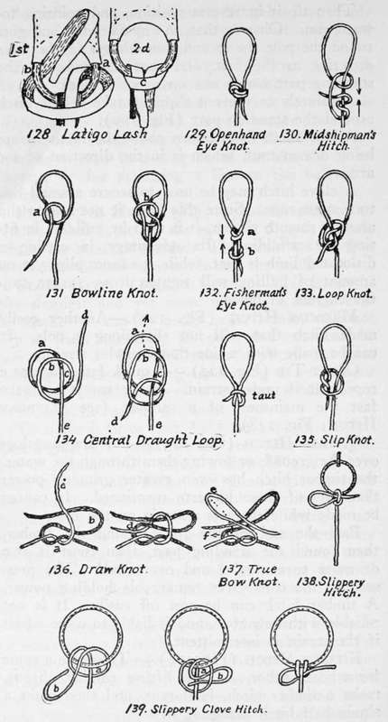

Knots, Hitches, And Lashings. Part 3
Description
This section is from the book "Camping And Woodcraft", by Horace Kephart. Also available from Amazon: Camping and Woodcraft.
Knots, Hitches, And Lashings. Part 3
For dragging logs over the ground, or towing them through the water, the timber hitch has even greater gripping power than any of those hitherto mentioned. It cannot be made while there is a strain on the rope.
Pass the end of the rope around the timber, then round the standing part, then twist it two or more turns under and over itself. The pressure of the coils gives remarkable holding power. A timber hitch can be cast off easily. It is not reliable with new rope, and is liable to come adrift if the strain is intermittent.
Killick Hitch (Fig. 124)
To secure a stone for a boat anchor, or for lifting similar objects, make a timber hitch, haul taut, and then make a single half hitch alongside it.
For towing slimy and slippery logs the same method is used, except that the half hitch is made u couple of feet in front of the other instead of along side.
Ring Hitch (Fig. 125)
When tying a lim or gut to a swivel ring, and for various other purposes, we want to secure attachment that is not clumsy and will not part at the knot. In the ring hitch the end fastening has no tendency to cut the line, and the draught is direct. If used in tying gut to a swivel, pass it twice around the swivel ring as shown in "first move"; pass the end over to the far side, and bring it through the double loop toward you at a; pass it over again and bring it through as before, but toward the swivel. See that these two turns are not too loose, and pull tight on the standing part first while still keeping a good strain on the standing part. With tweezers tighten the short end, then snip it off close. Cover the knot with a good blob of celluloid varnish (old photo films soaked in hot water, scrubbed with a stiff nail brush on exposed side, cut in pieces, and dissolved in acetone).
Lark's Head (Fig. 126)
A bight of the rope is passed through the ring, and the ends are then drawn through the bight. To make this tie mors secure a half hitch (a) may be added.
Catspaw (Fig. 127)
This is for hitching a rope on to the hook of a block for hoisting. The simplest form is here shown. First you make two bights in a rope, then, with a bight in each hand, take two or three twists from you; bring the two bights side by side, and throw their loops (a, b) ovei the hook (c).
Latigo Lash (Fig. 128)
Used in cinching a saddle, the latigo being the strap by which the girth is lashed to a ring at the other end of the girth. Pass the latigo through the ring from outside to inside; down to ring that hold? latigo itself, and through that from inside to outside, and up; through upper ring from outside, passing under and out at the right {a). Then bring strap forward horizontally to the left; pass it around back of ring (b) and then out through ring to the front, as in first illustration. Now pass end of latigo down through the horizontal loop (c). Cinch and pull tight, as in second illustration.
Loop Knots
These are for forming eyes that will not slip, in the end of a rope or other line, or to make secure fastenings for various purposes.
Openhand Eye Knot (Fig. 129)
Lay the end back along the standing part far enough to make an overhand knot with the doubled line, leaving a loop projecting. Very easy to make, and will not slip, but it does not give a direct pull, and one strand is likely to cut the other; hence a poor way to make, for instance, a loop at the end of a gut leader.
Midshipman's Hitch (Fig. 130)
Practically a loop secured by a magnus hitch. The strain is direct, and the knot easy to make and undo. Often used for attaching a tail-block to a rope.
Bowline Knot (Fig. 131)
Pronounced bo-lin. Most important of all loop knots, as it is perfectly dependable, cannot slip, cannot jam, and is easily cast loose. It has innumerable uses.
Form a small bight (a) on the standing part, leaving the end long enough for the loop, and bring the end down through the bight; pass the end under and around the standing part, back over and then under the bight (b) ; draw loop snug, and pull on standing part to haul taut.
It is immaterial whether the bight is made to left, as here shown, or to right, provided the end is properly passed. Learn to tie the bowline both overhand and underhand, with loop toward you and with it away from you.
A quick way to tie a bowline around a post, or through a ring, is to pass the end of the rope round the post, then take the standing part of the rope in your left hand, the post being next to you, and the end of the rope in your right hand; lay the end over the standing part and make an overhand knot as if you were going to make a reef knot; then by a twist, capsize the knot so that it becomes a half hitch in the standing part. Now pass the end behind and around the standing part, away from the post, and back down through the same half-hitch. Then pull tight.
Fisherman's Eye Knot (Fig. 132)
A bight is first made, and an overhand knot is tied with the standing part around the other as in Fig. 135; the end is now passed round the standing part, and knotted in the same way. Thus there is a running knot a followed by a check knot b, which, when the loop is hauled on, jam tight against one another. The strain is divided equally between the two knots, and the loop will stand until the line parts. This is one of the best ways to make an eye on a fishing line or gut.
Loop Knot (Fig. 133)
Shown in the illustration as formed before drawing taut, which is done by pulling on the end with one hand and on left-hand side of loop with the other. Jams fast, but is not so strong as 131, 132, or 134.
Central Draught Loop (Fig. 134)
Another excellent loop for lines or gut, as it will not give nor cut itself. Make the bight a} then b over it, and pass the end d under the standing part; then thread d through the opening c, over the standing part, and out between the bights a and b. Now draw the bight b under and through the bight a, in the direction of the arrow. Haul taut by pulling on e and d.
Continue to:
- prev: Knots, Hitches, And Lashings. Part 2
- Table of Contents
- next: Knots, Hitches, And Lashings. Part 4